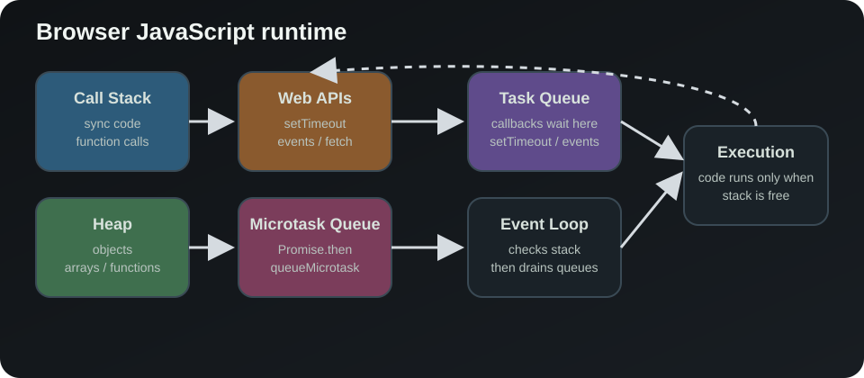

JavaScript execution (in the browser) relies on these 5 components:
1. Call Stack
- Executes functions (synchronous code)
2. Heap
- Stores objects, arrays, and functions in memory
3. Web APIs (from the browser)
- timers (
setTimeout) - events (
click,error) - fetch, etc.
4. Task Queue
- Where asynchronous callbacks wait to be executed
5. Event Loop
- conects stack ↔ queue
Here is an example of JS Call stack.
function a() {
b();
}
function b() {
console.log("hi");
}
a();In the example above, the Call stack will look like this:
a()
└── b()
└── console.log()JavaScript is single-threaded, meaning it executes one thing at a time.
console.log("1");
setTimeout(() => {
console.log("2");
}, 0);
console.log("3");The snipet above will leave this output:
1
3
2But how is this possible ? Shouldn't it be 1,2,3 ?
Let my explaint it step by step:
Step 1 :
console.log("1");goes to stack -> gets executed
Step 2:
setTimeout(...)goes to the Web APIs, where the timer starts, it does NOT stay on the call stack
Step 3 :
console.log("3");goes to stack -> gets executed
Step 4 :
Once the timer finishes, its callback is added to the task queue
Step 5 :
Here event loop will see that the stack is empty and that we have the setTimeout callback in qeue, so setTimeout callback is now added to the stack
Step 6 :
console.log("2");As soon as the setTimeout callback gets added to the stack, it will get executed
Microtasks and Promises
There is one more queue that matters in the browser: the microtask queue. Promises and queueMicrotask() use it, and it is processed before the task queue after the current stack finishes.
This is why a promise callback runs before a setTimeout(..., 0) callback.
console.log("1");
setTimeout(() => {
console.log("3");
}, 0);
Promise.resolve().then(() => {
console.log("2");
});
console.log("4");The output becomes:
1
4
2
3The reason is:
- The stack executes
console.log("1") setTimeoutgoes to the Web APIs and later the task queue- The promise callback goes to the microtask queue
- When the stack is empty, the engine drains microtasks first
- Only then does it move to the task queue
Here is a visual summary of the runtime flow:
